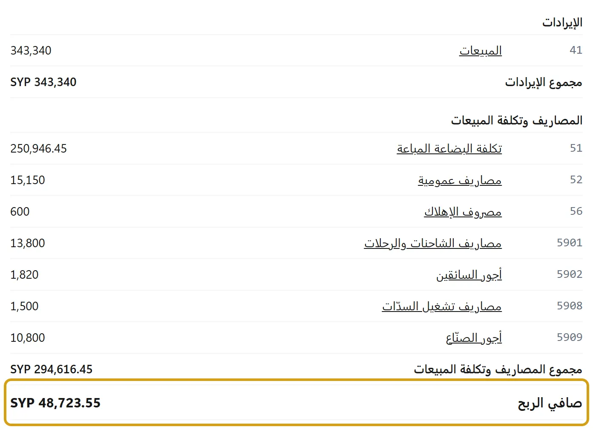

صافي الربح مو صحيح، أو أكبر مما ربحت فعلاً
صافي الربح يُحسب من القيود كما هي: المبيعات ناقص تكلفتها ناقص المصاريف المسجّلة. إذا طلع غير اللي بتتوقعه، فالسبب بالعادة واحد من هدول:


- مبيعات بلا تكلفة: دين بمبلغ بلا أصناف، أو بيع بـبعت، أو خدمة أو صنف بلا مخزون، أو صنف ما انسجّل شراؤه: مبلغها كله يدخل في الربح. وقتها يظهر تحت الربح سطر «… من المبيعات بلا تكلفة مسجّلة، فدخلت كاملة في الربح»، ثم يفصل: «منها … تكلفتها غير معروفة: دين بمبلغ، بيع سريع، صنف بلا فاتورة شراء»، و«منها … خدمات وأصناف بلا مخزون، لا تكلفة لها عند البيع». بضاعة وصلت بسعر صفر تُذكر وحدها لأنها ليست تكلفة ناقصة: «… من المبيعات بضاعة وصلت مجاناً بسعر صفر، تكلفتها صفر فعلاً». وصنف له فاتورة شراء لكن تكلفة القطعة منه أصغر من سنت يُذكر وحده كذلك: «… من المبيعات تكلفة القطعة فيها أصغر من أن تُكتب بعملة الدفاتر، فسُجّلت صفراً». ومرتجع من بيع فترة سابقة بلا تكلفة يُقال في جملته: «… رجعت من مبيعات فترة سابقة بلا تكلفة مسجّلة، فنقصت كاملة من الربح». الحل: سجّل الشراء بفاتورة شراء قبل البيع، وبضاعة البداية بـبضاعة أول المدة، وبِع الدين بأصنافه إذا بدك ربحه الحقيقي. فاتورة شراء في المدة نفسها تزيل السطر؛ وفي مدة لاحقة يبقى السطر على شهر البيع، ويقول شهر الشراء «… من تكلفة البضاعة عن مبيعات فترة أخرى، سجّلتها فاتورة شراء في هذه الفترة». وبيع غطّت تكلفته فاتورة شراء قبل فترته (مذكرة تسليم فوترتها في الشهر التالي مثلاً) يُذكر وحده: «… من المبيعات تكلفتها سُجّلت في فترة سابقة، فدخلت كاملة في ربح هذه الفترة». سيرو لا يقدّر تكلفة ما لم تُسجَّل.
- مرتجع شراء بعد بيع بالسالب: بعت الصنف قبل شرائه، ثم غطّته فاتورة شراء، ثم أرجعتها للمورد (أو عكست أمر إنتاج بـاعكس رغم النقص): التكلفة رجعت من الدفاتر، فالبيع بلا تكلفة من جديد، ويقوله السطر وربح الفاتورة معاً، حتى تسجّل شراءً غيره.
- فاتورة شراء صُحّحت أو أُلغيت أو سُعّرت بعد بيع بضاعتها: ربح الفاتورة يبقى كما هو، والفرق يدخل في تكلفة البضاعة بتاريخ فاتورة الشراء ولا يعود إلى شهر البيع، فمجموع أرباح الفواتير قد لا يساوي مجمل الربح. يقول ذلك السطر تحت ربح الفاتورة نفسه: «فاتورة شراء لبضاعة هذه الفاتورة صُحّحت أو أُلغيت أو سُعّرت بعد البيع…»، والمبلغ في السطر تحت ربح الفترة: «… فرق سعر فاتورة شراء عن بضاعة خرجت من المخزون ببيع أو إنتاج».
- بيع على جهاز قبل أن تصله فاتورة الشراء، وبقي من الصنف شيء: السطر يقول «… من المبيعات سُجّلت على جهاز لم تصله فاتورة شرائها بعد، فبقيت تكلفتها في قيمة البضاعة الباقية وتظهر عند بيعها». ربح هذا البيع أعلى وربح البيع الذي بعده أقل، والمجموع صحيح حين تُباع الكمية كلها. لا يحتاج عملاً؛ المزامنة قبل البيع تمنعه. وإن كان هذا البيع أنهى الصنف، فالمزامنة تسجّل تكلفته، وإذا أرجعته أو ألغيته بعدها ترجع البضاعة بتكلفتها وتخرج التكلفة من الربح.
- عمل حسب الطلب بمادة بلا تكلفة: المواد المستعملة فيها صنف ما انسجّل شراؤه: ما بعد تكلفة بقية المواد يدخل السطر «تكلفتها غير معروفة» حتى تسجّل فاتورة شرائه.
- مصاريف ما انسجّلت: الإيجار والرواتب والكهرباء تدخل الربح فقط بعد تسجيلها. في ملخص اليوم تحت صافي الربح يُكتب «بعد مصاريف …»: كم طرح هذا الشهر، ومعه «بضاعة مشتراة بالمبلغ …» إن كان فيه منها.
- تكلفة خاطئة: ربح الفاتورة تحت كل فاتورة بيع يريك أيها بيع بأقل من تكلفته أو بربح غير منطقي، وتصحيح التكلفة يصحّح ما بقي وما يُباع بعده؛ ما بيع قبله يبقى بتكلفته.
- عمالة كُتبت على أوامر الإنتاج: «… عمالة ومصاريف تشغيل كُتبت على أوامر الإنتاج، فخرجت من المصاريف إلى المخزون ورفعت الربح». سجّل الأجور نفسها مصروفاً (كيف)، وإلا يبقى الربح أعلى بهذا المبلغ ولو بعت البضاعة.
- مدة غير التي تقصدها: هذا الشهر من أول الشهر إلى اليوم. لمدة أخرى اختر من أعلى قائمة الدخل.
لتعرف من أين جاء كل مبلغ: اضغط سطر الحساب في قائمة الدخل فيفتح دفتره لهذه الأيام، بقيوده ومستند كل قيد. المساعد يراجع دفاترك إن سمحت له، والجواب الأكيد من هنا. وإن كان الربح يطلع خسارة: الأرباح تطلع خسارة.
تصفير صافي الربح: لا يوجد زر يصفّره، فهو يُقرأ من القيود ولا يُخزَّن. وهذه ثلاثة أشياء مختلفة، فانظر أيها تقصد:
- مدة جديدة: كل مدة تبدأ من صفر وحدها: هذا الشهر يبدأ من أول الشهر، وقائمة الدخل تعرض المدة التي تختارها، والسنة الجديدة من أولها. وإقفال السنة يمنع التعديل ولا يمسح شيئاً.
- أخذت الربح لنفسك: سحب شخصي (كيف): ينقص الصندوق ولا يغيّر الربح.
- بيانات تجربة تريد التخلص منها: أبدأ من جديد.
ورقم خاطئ يُصحَّح من أسبابه أعلاه.